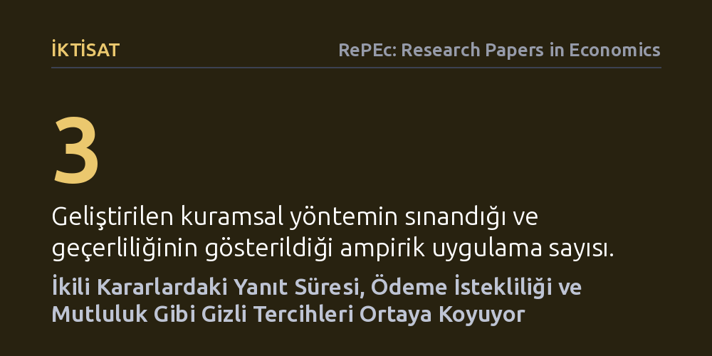

IKTISAT · RePEc: Research Papers in Economics · 2026-10-21
Araştırmacılar, ikili karar süreçlerindeki yanıt sürelerinin bireylerin ödeme istekliliği ve mutluluk gibi doğrudan gözlemlenemeyen iktisadi tercihlerini nasıl yansıttığını inceledi. Geliştirilen kuramsal model, karar sürelerinin bu gizli değişkenleri açığa çıkarabildiğini göstererek en uygun dürtme tasarımı ve gelir-mutluluk ilişkisinde yeni öngörüler sundu.
Bir kararı sadece ne yönde verdiğimizin değil, karar verirken ne kadar duraksadığımızın da gerçek tercihlerimiz ve refahımız hakkında derin iktisadi bilgiler taşıdığını gösterir.

Geleneksel iktisat yaklaşımları uzun yıllar boyunca bireylerin tercihlerini yalnızca verdikleri nihai kararlar üzerinden anlamaya çalıştı. Bir tüketicinin bir ürünü satın alıp almadığı, bir seçmenin hangi adaya oy verdiği ya da bir çalışanın sunulan iş teklifini kabul edip etmediği gibi somut sonuçlar incelendi. Ancak yalnızca nihai seçime odaklanan bu çerçeve, kararın arkasındaki zihinsel süreci, arzu şiddetini ve içsel tereddütleri bütünüyle göz ardı eder. Oysa aynı seçeneği işaretleyen iki kişiden biri bunu tereddütsüz bir kesinlikle yaparken, diğeri dakikalarca bocalayarak aynı noktaya varmış olabilir.
İktisatçıların karşılaştığı en temel engellerden biri; ödeme istekliliği, tercih yoğunluğu, kalite algısı ya da mutluluk gibi kavramların doğrudan gözlemlenemeyen "gizli değişkenler" olmasıdır. Bireylerin anketlerde beyan ettikleri yanıtlar her zaman gerçeği yansıtmaz; piyasadaki yalın tercihler ise bu duyguların ne kadar güçlü olduğunu tek başına göstermeye yetmez. Bu çalışma, tam da bu bilgi açığını kapatmak amacıyla, karar anında geçen sürenin yani yanıt sürelerinin bu görünmez iktisadi değişkenleri güvenilir biçimde açığa çıkarıp çıkaramayacağını inceliyor.
Araştırmacılar bu soruyu yanıtlamak için karar teorisi ile ekonometriyi harmanlayan kapsamlı bir kuramsal çerçeve inşa ettiler. Bireylerin yalnızca iki alternatif arasında kaldığı ikili yanıt modellerini temel alarak, karar verme süresinin hangi koşullar altında gizli değişkenleri tespit edebileceğini matematiksel olarak formüle ettiler. Ortaya konan kuram, literatürde daha önce parça parça ele alınmış dağınık bulguları tek bir çatı altında toplayarak genelleştirdi.
Yazarlar geliştirdikleri yöntemi yalnızca soyut bir matematiksel çerçeve olarak bırakmayıp, sunduğu yeni içgörüleri üç somut ampirik uygulama üzerinde sınadılar. Bu uygulamalar; bireyleri daha faydalı seçimlere yönlendirmeyi amaçlayan en uygun dürtme (nudge) tasarımlarının tespiti, gelirin artmasıyla birlikte hissedilen ek mutluluğun azalıp azalmadığının test edilmesi ve uygulanan müdahalelerin farklı bireyler üzerindeki heterojen etkilerinin önceden kestirilmesi oldu.
Çalışmanın ulaştığı temel sonuç, karar anında geçen sürenin rastlantısal bir gecikme olmadığını, aksine bireyin iç dünyasındaki tercih dinamiklerini yansıtan sistematik bir bilgi kaynağı olduğunu ortaya koyuyor. Yazarların belirttiği gibi, "Yanıt süreleri, ödeme istekliliği, tercih yoğunluğu, kalite veya mutluluk gibi iktisadi açıdan önemli ancak gözlemlenemeyen değişkenler hakkında bilgi içerir." Özellikle alternatiflerin sağladığı faydalar birbirine çok yakın olduğunda karar süresinin belirgin biçimde uzaması, bireyin kayıtsızlık eşiğinde olduğunu ve tercih hassasiyetini net biçimde ele veriyor.
Ampirik uygulamalardan elde edilen bulgular da bu yöntemin açıklayıcı gücünü doğruluyor. Örneğin, gelir düzeyi arttıkça ilave gelirin sağladığı mutluluk artışının zayıfladığı yönündeki köklü iktisadi tez, karar süreleri üzerinden test edildiğinde kuramın öngörüleriyle uyumlu sonuçlar veriyor. Benzer biçimde, bireylere sunulan küçük yönlendirmelerin kimlerde daha etkili olduğunu anlamak için yanıt sürelerine bakmak, hangi bireylerin kararsız olduğunu ve desteğe ihtiyaç duyduğunu önceden belirlemeyi mümkün kılıyor.
Bu bulgular, davranışsal iktisat ve kamu politikası tasarımı açısından önemli uygulama alanları sunuyor. Politika yapıcılar ve araştırmacılar, artık yalnızca insanların neyi seçtiğine değil, bu kararı verirken ne kadar duraksadığına da bakarak daha hedefe yönelik müdahaleler geliştirebilir. Özellikle sosyal destek programlarında, emeklilik planı tercihlerinde ya da sağlık sigortası seçimlerinde uzun süre tereddüt eden grupları belirlemek, kamu kaynaklarının doğru yönlendirilmesine katkı sağlayabilir.
Bununla birlikte, dijital platformların ve çevrim içi karar ortamlarının yaygınlaştığı günümüzde, yanıt sürelerinin kaydedilmesi ticari ve etik tartışmaları da beraberinde getirmektedir. Kullanıcıların bir teklifi değerlendirirken ne kadar düşündüğünü izleyen algoritmalar, dinamik fiyatlandırma veya manipülatif tekliflerle tüketici aleyhine kullanılma riski taşır. Dolayısıyla zamanın güçlü bir bilgi kaynağı haline geldiği bu yeni çerçevede, yöntemin sunduğu bilimsel faydalar kadar etik sınırlarının da dikkatle çizilmesi gerekmektedir.